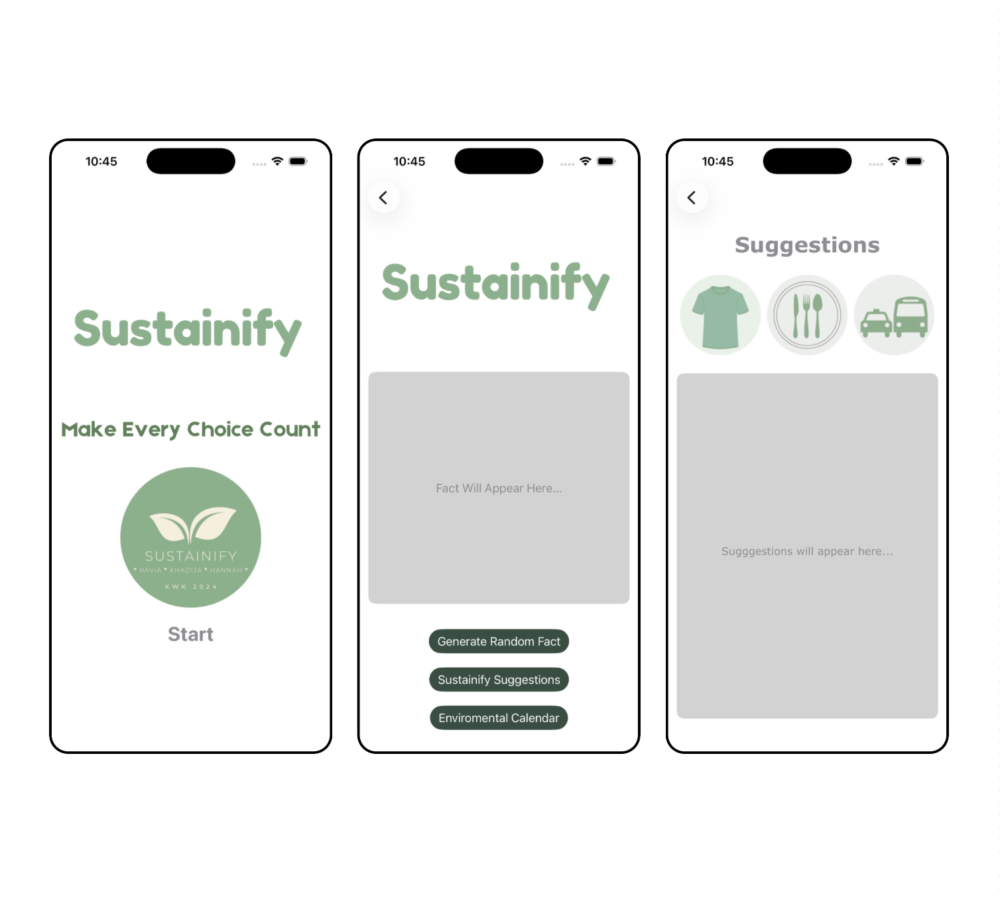

Projects
Academic Performance Data Analysis
An interactive data dashboard analyzing the relationship between student behaviors and academic performance.
TABLEAU • DATA VISUALIZATION

Sustainify
An IOS app promoting environmental awareness by delivering informative sustainability facts and personalized suggestions to help users improve their daily eco-friendly habits.
SWIFT • IOS DEVELOPEMENT • XCODE
